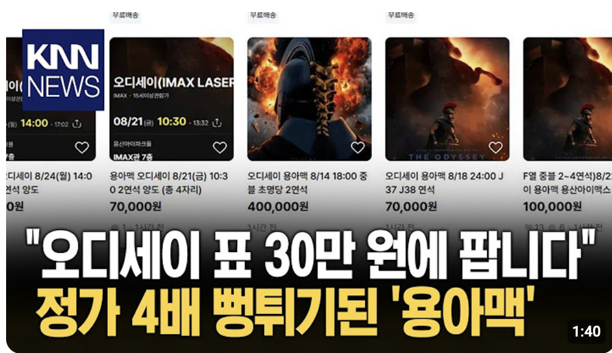

BEFORE현재 표지

PROPOSED리셀 증거형 표지


용아맥 표 보려고
며칠째 새로고침 중인 사람?
나도 그랬음.
리셀 사례 화면 · 출처 KNN NEWS리셀 화면상단 약 40%
채도원본의 35%
밝기원본의 55%
연결검은 페이드
의도
첫눈에는 큰 제목이 읽히고, 다음 시선에서 여러 리셀 가격이 보이도록 한다. 뉴스 캡처를 카드처럼 붙인 흔적과 플레이어 UI는 제거하며, KNN이 Prickly 콘텐츠를 제작한 것처럼 보이지 않도록 출처를 분리한다.